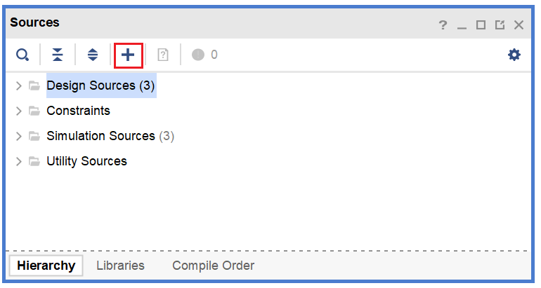
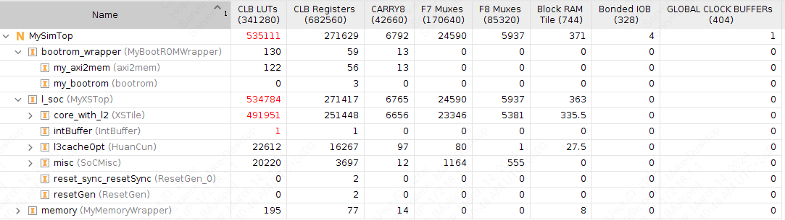

FPGA验证
使用Xilinx Vivado 2019.1进行FPGA验证。
FPGA流程简介
在完成RTL代码设计之后，可以进入FPGA验证流程，大致分为以下几个阶段：
导入设计
打开Vivado，选择Create Project，选择合适的工程名字和路径。如果是在本地运行，尽量避免中文路径，否则Vivado后续可能报错。
选择RTL Project，连续选择Next，在Default Part选择验证所使用的FPGA核心板型号
完成工程创建向导之后即可进入Vivado主界面。在PROJECT MANAGER -> Sources添加RTL代码

在弹出界面中选择Add or create design sources -> Add Files即可导入设计。
编写仿真程序
为了验证RTL代码是否正确，需要用Verilog或SystemVerilog编写一个Testbench，通过观察波形验证设计是否符合需求。
一个简单的Testbench大致如下。
module tb_top();
reg clock;
reg reset;
initial begin
clock = 0;
reset = 1
#100 reset = 0;
#2000000 $finish;
end
always begin
#1 clock <= ~clock;
end
MySimTop dut(
.clock(clock),
.reset(reset)
);
endmodule
Behavioral Simulation 行为仿真
对RTL代码编译之后即可进行的仿真，用于验证逻辑功能的正确性。 在逻辑综合前需要进行功能仿真，以便尽早发现设计中的缺陷。
Synthesis 逻辑综合
在进行逻辑综合之前，需要预先选定目标的FPGA平台。综合工具会根据FPGA核心所包含的LUT、BRAM等资源对硬件设计进行逻辑综合。
在完成逻辑综合之后，会给出门级网表的各类信息，包括硬件设计所使用的FPGA资源。
如下图所示，该设计所需要的硬件资源超过了FPGA核心的限制，无法在单个FPGA芯片中实现。 
替换Block RAM
在出现LUT的资源占用过多的情况下，可以考虑将硬件设计中大块的缓存和存储单元用Vivado工具提供的Block RAM IP核替换，可以避免用LUT直接综合，从而减少LUT的利用率。
Implementation Place & Route实现
在逻辑综合之后，需要基于门级网表进行布局布线，得到硬件设计在FPGA芯片上的物理实现。
布局布线完成之后，FPGA资源利用率会有所变化，这是因为在布局布线的过程中会改变逻辑单元的位置，导致LUT等资源的使用产生变化。
Generate Bitstream
在布局布线完成之后，需要生成比特流，连接FPGA板，并把相应的代码录入到FPGA核心之中，实现硬件逻辑的重构。